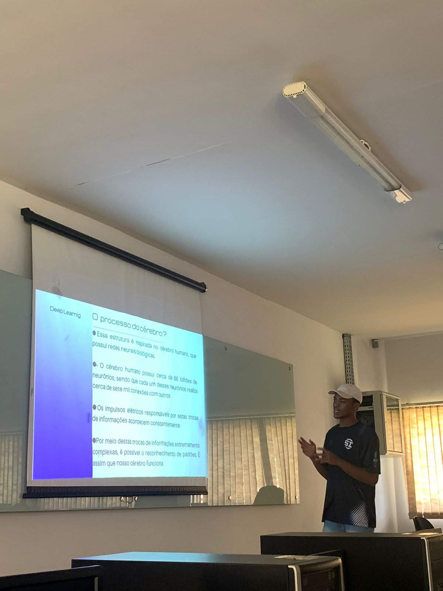
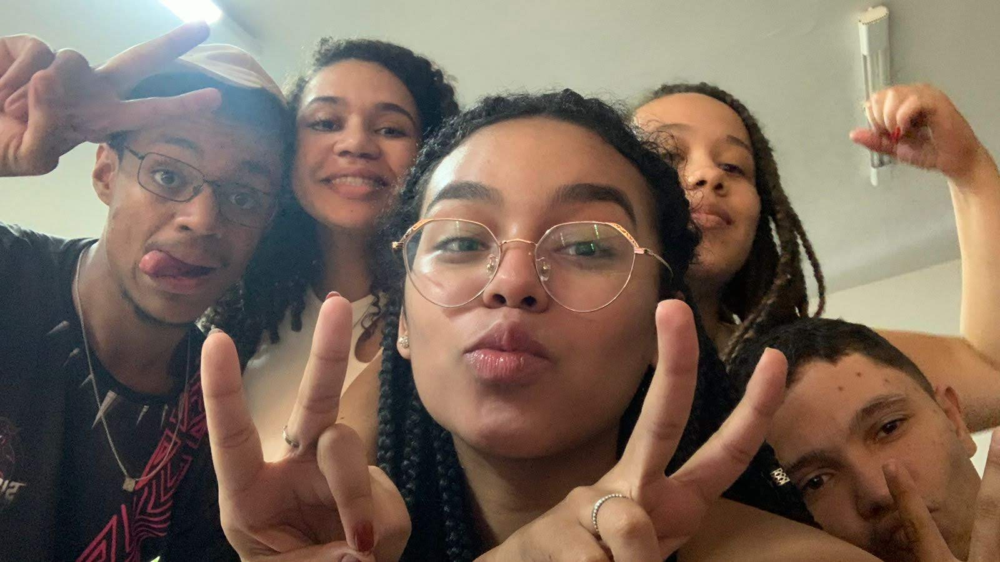

Walmir
Walmir é aquele tipo de pessoa que ilumina qualquer ambiente com o bom humor e o coração gigante.
Engraçado por natureza,
leve até nas conversas mais sérias,
e com uma risada que contagia até nos dias
mais difíceis.
Conheci o Walmir na faculdade, e desde então ele se tornou uma das melhores amizades que conquistei nessa fase da vida.
É impossível não admirar o quanto ele é esforçado — sempre correndo atrás dos seus objetivos, sem medo de lutar pelo que acredita.
Com ele, cada momento vira história, cada piada vira memória boa, e cada conversa traz leveza e aprendizado. A presença do Walmir é daquelas que marcam — pela alegria, pelo companheirismo e por todo o bem que ele espalha por onde passa.
Momentos com Walmir📸

